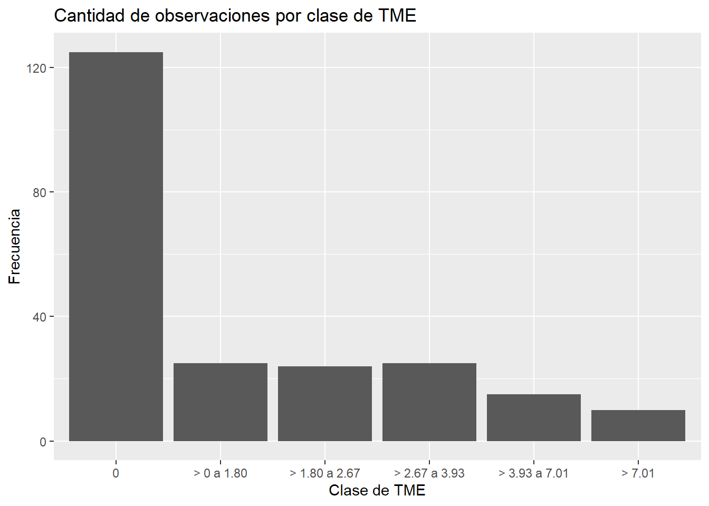
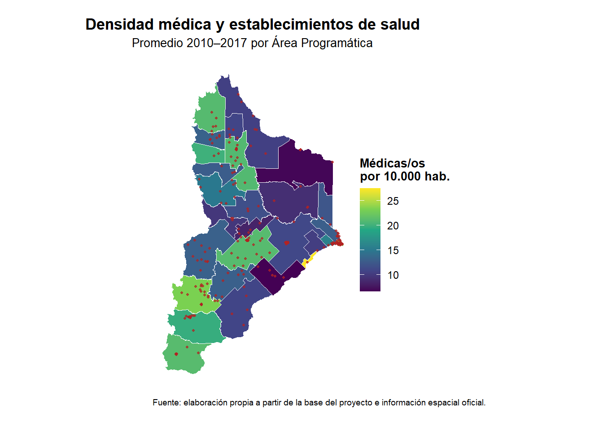

En este documento haremos un registro de los pasos experimentales que vamos realizando con el Proyecto “Cáncer de Mama en Neuquén” para el Taller de Investigación de la Maestría En Estadística Aplicada UNCO, año 2026.
Los datos originales corresponden a una base proporcionada por la Dra. Caro en función de su proyecto de Maestría e Investigación realizada entre los años 2010 al 2017.
#Inicios de la Investigación
En este documento vamos a ir describiendo una parte de la investigación del grupo que en principio pretende obtener una base ampliada para el análisis de los datos que tenemos, que pueda contener datos georeferenciales para poder asociar la información de base con una capa geográfica y poder realizar análisis de datos exploratorio desde la perspectiva espacial.
A continuación, hemos descargado del sitio IDENEU:
https://ideneu.neuquen.gov.ar/geonetwork/srv/eng/catalog.search# los estableciemientos de Salud, porque la capa de Delimitación de zonas sanitarias disponible está actualizada desde 2016 en adelante y en nuestra base original de datos, el período a analizar es entre el 2010 y 2017, en el cual existía otra disposición de zonas santiarias.
La organización sanitaria de la provincia del Neuquén se estructuraba territorialmente en Áreas Programa Hospitalarias, que a su vez se agrupan en Zonas Sanitarias. Cada Área Programa constituye una unidad territorial de referencia para la población y se encuentra identificada con una localidad o conjunto de localidades de referencia. En el documento se reconocen cinco zonas sanitarias numeradas, además de una Zona Metropolitana que involucra a Nequén y a Plottier.
#Organización, limpieza y exploración de los datos en R y SQLite
Una vez obtenidas y organizadas las capas geográficas en QGIS, continuamos el trabajo en R, con el propósito de integrar la información espacial con la base de datos original del proyecto y comenzar a construir un flujo de trabajo reproducible.
En una primera etapa importamos a R tanto la base de datos original en formato Excel como las capas geográficas previamente preparadas en QGIS y almacenadas en un archivo GeoPackage. A partir de allí realizamos controles iniciales sobre la estructura de las bases, los nombres y tipos de las variables, la cantidad de registros, los años disponibles, las Áreas Programáticas y las Zonas Sanitarias.
Posteriormente trabajamos en la normalización de los nombres de las Áreas Programáticas, dado que la denominación utilizada en la base estadística no coincidía en todos los casos con la presente en la información geográfica de los establecimientos de salud. Esta etapa resultó necesaria para poder establecer posteriormente relaciones entre ambas fuentes de información.
####Carga de paquetes e importación de los datos
Se utilizaron los paquetes `sf` para trabajar con información espacial, `dplyr` para la manipulación de datos y `readxl` para importar la base original almacenada en Excel.
Linking to GEOS 3.14.1, GDAL 3.12.1, PROJ 9.7.1; sf_use_s2() is TRUE
library(dplyr)
Adjuntando el paquete: 'dplyr'
The following objects are masked from 'package:stats':
filter, lag
The following objects are masked from 'package:base':
intersect, setdiff, setequal, union
library(readxl)archivo_excel <-"datos/originales/BASE 1.xlsx"archivo_gpkg <-"datos/originales/cancer_neuquen.gpkg"# ------------------------------------------------------------# 2. Capas disponibles en el GeoPackage# ------------------------------------------------------------capas <-st_layers(archivo_gpkg)capas
Driver: GPKG
Available layers:
layer_name geometry_type features fields crs_name
1 establecimientos_salud Point 233 18 POSGAR 94 / Argentina 2
2 neuquen_departamentos Multi Polygon 16 9 WGS 84
3 neuquen_provincia Multi Polygon 1 8 WGS 84
# ---------------------------------------------------# 3. Importación de las capas espaciales# ---------------------------------------------------establecimientos_salud <-st_read( archivo_gpkg,layer ="establecimientos_salud",quiet =TRUE)neuquen_departamentos <-st_read( archivo_gpkg,layer ="neuquen_departamentos",quiet =TRUE)neuquen_provincia <-st_read( archivo_gpkg,layer ="neuquen_provincia",quiet =TRUE)# ---------------------------------------------------# 4. Hojas disponibles en la base Excel# ---------------------------------------------------hojas_excel <-excel_sheets(archivo_excel)hojas_excel
[1] "BASE" "REFERENCIA"
# ---------------------------------------------------# 5. Importación de la base tabular# ---------------------------------------------------base_original <-read_excel( archivo_excel,sheet ="BASE")referencia_original <-read_excel( archivo_excel,sheet ="REFERENCIA",col_names =FALSE)
New names:
• `` -> `...1`
• `` -> `...2`
names(referencia_original) <-c("variable","descripcion")# ---------------------------------------------------# 6. Controles iniciales de la base# ---------------------------------------------------dim(base_original)
# A tibble: 6 × 14
ID id_efector ZS AP Año TME IE IDE TN M E O
<dbl> <dbl> <chr> <chr> <dbl> <dbl> <dbl> <dbl> <dbl> <dbl> <dbl> <dbl>
1 1 1 I Centen… 2010 1.81 27.0 48.4 22.3 15.5 28.2 45.5
2 2 3 I Senill… 2010 0 26.7 48.4 19.2 8.1 23 20.4
3 3 5 I SPCH 2010 0 11.9 54.6 23.9 9.9 22.5 26.5
4 4 33 II Zapala 2010 0.647 25.2 52.7 22.8 23.4 35.2 41.3
5 5 40 II Aluminé 2010 3.33 20.8 53.0 22.1 13.1 35.9 22.1
6 6 36 II Bajada… 2010 0 23.1 58.1 25.4 19 50.7 5.18
# ℹ 2 more variables: G <dbl>, C <dbl>
head(referencia_original)
# A tibble: 6 × 2
variable descripcion
<chr> <chr>
1 TME Tasa estandarizada de mortalidad(TME) por cáncer de mama por 100.000…
2 IE Índice de envejecimiento de la población
3 IDE El Índice de Dependencia Económica
4 TN La tasa de Natalidad
5 M Densidad de médicas/os
6 E Densidad de enfermeras/os
Rows: 9
Columns: 2
$ variable <chr> "TME", "IE", "IDE", "TN", "M", "E", "O", "G", "C"
$ descripcion <chr> "Tasa estandarizada de mortalidad(TME) por cáncer de mama …
####Diagnóstico y Limpieza por área programática
A continuación, realizamos una primera exploración de la base original con el objetivo de verificar la organización temporal de los datos, las Zonas Sanitarias y Áreas Programáticas presentes, la existencia de valores faltantes o duplicados y considerar la totalidad de observaciones.
# ------------------------------------------------------------# 2. Zonas sanitarias# ------------------------------------------------------------sort(unique(base_original$ZS))
[1] "I" "II" "III" "IV" "V" "VI"
base_original |>count(ZS)
# A tibble: 6 × 2
ZS n
<chr> <int>
1 I 24
2 II 56
3 III 48
4 IV 32
5 V 48
6 VI 16
# ------------------------------------------------------------# 3. Áreas Programáticas# ------------------------------------------------------------sort(unique(base_original$AP))
[1] "Aluminé" "Andacollo"
[3] "Añelo" "Bajada del Agrio"
[5] "Buta Ranquil" "Centenario"
[7] "Chos Malal" "Cutral Co Plaza Huincul"
[9] "El Chocon" "El Cholar"
[11] "El Huecu" "Junin de los Andes"
[13] "Las Coloradas" "Las Lajas"
[15] "las Ovejas" "Loncopue"
[17] "Mariano Moreno" "Neuquen"
[19] "Picun Leufú" "Piedra del Aguila"
[21] "Plottier" "Rincon de los Sauces"
[23] "Senillosa" "SMA"
[25] "SPCH" "Tricao Malal"
[27] "Villa La Angostura" "Zapala"
n_distinct(base_original$AP)
[1] 28
base_original |>count(AP) |>arrange(AP)
# A tibble: 28 × 2
AP n
<chr> <int>
1 Aluminé 8
2 Andacollo 8
3 Añelo 8
4 Bajada del Agrio 8
5 Buta Ranquil 8
6 Centenario 8
7 Chos Malal 8
8 Cutral Co Plaza Huincul 8
9 El Chocon 8
10 El Cholar 8
# ℹ 18 more rows
# ------------------------------------------------------------# 4. Relación entre ZS y AP# ------------------------------------------------------------base_original |>distinct(ZS, AP) |>arrange(ZS, AP)
# A tibble: 28 × 2
ZS AP
<chr> <chr>
1 I Centenario
2 I SPCH
3 I Senillosa
4 II Aluminé
5 II Bajada del Agrio
6 II El Huecu
7 II Las Lajas
8 II Loncopue
9 II Mariano Moreno
10 II Zapala
# ℹ 18 more rows
# A tibble: 28 × 3
id_efector ZS AP
<dbl> <chr> <chr>
1 1 I Centenario
2 2 VI Plottier
3 3 I Senillosa
4 4 V Rincon de los Sauces
5 5 I SPCH
6 6 V Añelo
7 7 V El Chocon
8 33 II Zapala
9 34 II Mariano Moreno
10 35 II Las Lajas
# ℹ 18 more rows
# A tibble: 0 × 3
# ℹ 3 variables: AP <chr>, Año <dbl>, n <int>
# ------------------------------------------------------------# 8. Completitud temporal de cada AP# ------------------------------------------------------------base_original |>count(AP) |>arrange(n, AP)
# A tibble: 28 × 2
AP n
<chr> <int>
1 Aluminé 8
2 Andacollo 8
3 Añelo 8
4 Bajada del Agrio 8
5 Buta Ranquil 8
6 Centenario 8
7 Chos Malal 8
8 Cutral Co Plaza Huincul 8
9 El Chocon 8
10 El Cholar 8
# ℹ 18 more rows
####Preparación de la Base y vinculación con la Información espacial
El objetivo en esta etapa es preparar una base que vincule los datos georeferenciales con la base de datos originales.
Para ello, generamos una “base limpia”, conservando la base original. Utilizamos “mutate” para para convertir las variables en enteros cuando era necesario.
Al inspeccionar los nombres de las Áreas Programáticas se encontraron algunas diferencias de escritura, principalmente relacionadas con el uso de mayúsculas y tildes.
Para unificar estas denominaciones se utilizó case_when() dentro de mutate(), conservando los nombres de las Áreas que no requerían modificación.
base_limpia <- base_original |>mutate(ID =as.integer(ID),id_efector =as.integer(id_efector), Año =as.integer(Año) )base_limpia <- base_limpia |>mutate(AP =case_when( AP =="El Chocon"~"El Chocón", AP =="El Huecu"~"El Huecú", AP =="Junin de los Andes"~"Junín de los Andes", AP =="las Ovejas"~"Las Ovejas", AP =="Loncopue"~"Loncopué", AP =="Neuquen"~"Neuquén", AP =="Picun Leufú"~"Picún Leufú", AP =="Piedra del Aguila"~"Piedra del Águila", AP =="Rincon de los Sauces"~"Rincón de los Sauces",TRUE~ AP ) )
####Tabla de atributos de los establecimientos de Salud
Al traer la capa espacial de QGIS a R, generamos una capa espacial que denominamos establecimientos_salud del tipo sf (este tipo de archivo contiene su descripción y su geometría). A partir de esta capa generamos la tabla de atributos, para examinar su información tabluarmente:
La normalización realizada anteriormente resolvía diferencias de escritura dentro de la base estadística. Sin embargo, todavía existía otro problema: las denominaciones utilizadas para las Áreas Programáticas en la base estadística no coincidían necesariamente con las utilizadas en la capa de establecimientos de salud. Por ejemplo: Una misma AP podía aparecer como Bajada del Agrio en la base estadística y como B DEL AGRIO en la capa espacial.
Para ello armamos la siguiente tabla:
equivalencias_ap <-tibble(AP =c("Aluminé","Andacollo","Añelo","Bajada del Agrio","Buta Ranquil","Centenario","Chos Malal","Cutral Co Plaza Huincul","El Chocón","El Cholar","El Huecú","Junín de los Andes","Las Coloradas","Las Lajas","Las Ovejas","Loncopué","Mariano Moreno","Neuquén","Picún Leufú","Piedra del Águila","Plottier","Rincón de los Sauces","Senillosa","SMA","SPCH","Tricao Malal","Villa La Angostura","Zapala" ),ap_espacial =c("ALUMINE","ANDACOLLO","AÑELO","B DEL AGRIO","BUTA RANQUIL","CENTENARIO","CHOS MALAL","CUTRAL CO-P HUINCUL","CHOCON","EL CHOLAR","EL HUECU","J DE LOS ANDES","LAS COLORADAS","LAS LAJAS","LAS OVEJAS","LONCOPUE","M MORENO","CAPITAL","P LEUFU","P DEL AGUILA","PLOTTIER","R DE LOS SAUCES","SENILLOSA","SAN M DE LOS ANDES","S P DEL CH","TRICAO MALAL","V LA ANGOSTURA","ZAPALA" ))
####Unión de datos y homogeneización espacial
A continuación realizamos un left_join para incorporar a la capa de establecimientos de salud el nombre normalizado de cada Área Programática, utilizando la tabla equivalencias_ap como vínculo entre ambas denominaciones. Luego contamos la cantidad de establecimientos correspondientes a cada AP, como una forma de controlar la unión realizada. Finalmente, homogeneizamos el sistema de coordenadas de las capas espaciales, tomando como referencia el CRS de la capa de establecimientos y transformando las capas de departamentos y de la provincia al mismo sistema.
Para verificar que las transformaciones realizadas no hubieran alterado la estructura esperada de los datos, ejecutamos nuevamente el script de limpieza y usamos distintos controles con stopifnot(), de manera que la ejecución se detuviera automáticamente si alguna de las condiciones esperadas no se cumplía.
Verificamos así la estructura de la base estadística: cantidad total de registros, número de Áreas Programáticas y años disponibles, período comprendido entre 2010 y 2017, ausencia de valores faltantes y de duplicados para cada combinación AP-año. También se controló que cada una de las 28 Áreas Programáticas tuviera ocho observaciones y que existiera una correspondencia consistente entre id_efector, Zona Sanitaria y Área Programática.
A continuación controlamos la vinculación territorial realizada previamente. Se verificó que la tabla equivalencias_ap contuviera 28 correspondencias únicas y que los join no hubieran generado valores faltantes. También corroboramos que los 233 establecimientos de salud quedaran asociados a alguna de las 28 Áreas Programáticas y que las tres capas espaciales utilizaran el mismo sistema de referencia de coordenadas.
Finalmente hicimos controles específicamente espaciales, para verificar la validez de las geometrías de los establecimientos, departamentos y provincia mediante st_is_valid(), y usamos st_intersects() para comprobar qué establecimientos se encontraban espacialmente dentro de los límites de la provincia de Neuquén. Al finalizar el script generamos un resumen con los principales resultados de estos controles, que arrojó:
#Base estadística: 224 registros
#Áreas Programáticas: 28
#Años: 8
#Establecimientos: 233
#Establecimientos fuera de Neuquén: 0
####Guardar los datos procesados y vincular con SQLite
Decidimos incorporar SQLite como una etapa complementaria del flujo de trabajo. Si bien las consultas podían realizarse directamente en R, se buscó organizar la información en una base de datos relacional y utilizar SQL para realizar consultas, agregados y controles sobre los datos procesados. De este modo, SQLite se utilizó como herramienta de gestión y consulta, mientras que R se mantuvo como entorno principal para el análisis estadístico y espacial.
Dado el tamaño actual de la base, su incorporación no respondió a una necesidad de rendimiento, sino a una decisión de organización del trabajo y de integración de herramientas de bases de datos dentro del proyecto.
Antes de comenzar el trabajo con SQLite, se creó un script especial para guardar los resultados obtenidos luego de la limpieza y los controles. El script ejecuta previamente el anterior de los controles y luego exporta a datos/procesados la base estadística limpia, la tabla de equivalencias de Áreas Programáticas y el resumen de establecimientos por AP.
También se generó un nuevo GeoPackage, cancer_neuquen_procesado.gpkg, con las capas de establecimientos, departamentos y provincia ya normalizadas y con un sistema de coordenadas homogéneo. Finalmente, se controlaron los archivos creados en la carpeta de datos procesados.
####Creación de Base en SQLite y prueba de conexión
En esta primera etapa cargamos los paquetes útiles para trabajar con bases de datos (DBI y RSQLite) y nuevamente realizamos los controles previos sobre los datos procesados. Luego definimos la ruta del archivo cancer_mama_neuquen.sqlite y creamos una nueva conexión con SQLite mediante dbConnect().
Antes de incorporar los establecimientos a la base eliminamos su geometría, ya que esta se mantiene almacenada en el GeoPackage. Para conservar una referencia espacial dentro de SQLite, tomamos las coordenadas de cada establecimiento y las agregamos como variables x e y.
A continuación escribimos en SQLite las tablas correspondientes a la base de cáncer, referencias de variables, equivalencias de Áreas Programáticas, establecimientos de salud y cantidad de establecimientos por AP. Finalmente verificamos la creación de las tablas y realizamos algunas consultas básicas en SQL para controlar la cantidad de registros, Áreas Programáticas, período temporal y establecimientos. Una vez comprobado el funcionamiento de la conexión y la consistencia de los datos almacenados, cerramos la conexión con dbDisconnect(), finalizando la primera prueba.
============================================
CONTROLES FINALIZADOS
============================================
Base estadística: 224 registros
Áreas Programáticas: 28
Años: 8
Establecimientos: 233
Establecimientos fuera de Neuquén: 0
============================================
# ------------------------------------------------------------# 3. Ruta de la base SQLite# ------------------------------------------------------------archivo_sqlite <-"datos/procesados/cancer_mama_neuquen.sqlite"# ------------------------------------------------------------# 4. Crear / reemplazar la base SQLite# ------------------------------------------------------------if (file.exists(archivo_sqlite)) {file.remove(archivo_sqlite)}
Warning in file.remove(archivo_sqlite): no fue posible abrir el archivo
'datos/procesados/cancer_mama_neuquen.sqlite', motivo 'Permission denied'
[1] FALSE
con <-dbConnect(SQLite(), archivo_sqlite)# ------------------------------------------------------------# 5. Preparar tabla de establecimientos# La geometría se conserva aparte en el GeoPackage.# Aquí incorporamos coordenadas para consultas tabulares.# ------------------------------------------------------------coordenadas <-st_coordinates(establecimientos_limpios)establecimientos_sql <- establecimientos_limpios |>st_drop_geometry() |>as_tibble() |>mutate(x = coordenadas[, "X"],y = coordenadas[, "Y"] )# ------------------------------------------------------------# 6. Escribir tablas en SQLite# ------------------------------------------------------------dbWriteTable( con,"base_cancer", base_limpia,overwrite =TRUE)dbWriteTable( con,"referencias", referencia_original,overwrite =TRUE)dbWriteTable( con,"equivalencias_ap", equivalencias_ap,overwrite =TRUE)dbWriteTable( con,"establecimientos", establecimientos_sql,overwrite =TRUE)dbWriteTable( con,"establecimientos_por_ap", establecimientos_por_ap,overwrite =TRUE)# ------------------------------------------------------------# 7. Control de tablas creadas# ------------------------------------------------------------dbListTables(con)
Una vez creada la base SQLite, preprarmos un nuevo script de R, para conectarnos al archivo cancer_mama_neuquen.sqlite y consultar directamente las tablas almacenadas. Como primera verificación listamos las tablas disponibles e hicimos consultas simples sobre base_cancer: visualización de los primeros registros, cantidad total de observaciones, Áreas Programáticas existentes y número de registros por año.
Luego creamos la función ejecutar_sql(), destinada a leer consultas guardadas en archivos .sql y ejecutarlas sobre la conexión activa. Esto ayuda a separar las consultas SQL del código de R y mantenerlas organizadas en la carpeta sql/, pudiendo reutilizarlas desde R sin escribir nuevamente cada consulta.
library(DBI)library(RSQLite)archivo_sqlite <-"datos/procesados/cancer_mama_neuquen.sqlite"con <-dbConnect(SQLite(), archivo_sqlite)# Ver tablas disponiblesdbListTables(con)
dbGetQuery( con," SELECT * FROM base_cancer LIMIT 10; ")
ID id_efector ZS AP Año TME IE IDE TN M
1 1 1 I Centenario 2010 1.8114648 26.95680 48.45 22.31 15.5
2 2 3 I Senillosa 2010 0.0000000 26.73319 48.43 19.17 8.1
3 3 5 I SPCH 2010 0.0000000 11.87696 54.59 23.91 9.9
4 4 33 II Zapala 2010 0.6470487 25.19364 52.70 22.82 23.4
5 5 40 II Aluminé 2010 3.3329113 20.80033 52.99 22.11 13.1
6 6 36 II Bajada del Agrio 2010 0.0000000 23.14225 58.12 25.35 19.0
7 7 39 II El Huecú 2010 0.0000000 23.38983 52.75 21.82 14.2
8 8 35 II Las Lajas 2010 0.0000000 23.36040 58.31 24.80 7.5
9 9 37 II Loncopué 2010 0.0000000 24.84076 54.99 22.93 9.1
10 10 34 II Mariano Moreno 2010 0.0000000 25.15883 52.70 19.27 7.0
E O G C ap_espacial
1 28.2 45.54 54.6 3.5 CENTENARIO
2 23.0 20.44 51.0 5.0 SENILLOSA
3 22.5 26.48 55.3 4.1 S P DEL CH
4 35.2 41.33 51.5 3.3 ZAPALA
5 35.9 22.06 38.2 4.5 ALUMINE
6 50.7 5.18 0.0 1.9 B DEL AGRIO
7 47.4 20.48 41.0 3.9 EL HUECU
8 24.2 20.91 50.7 4.9 LAS LAJAS
9 34.7 20.60 45.3 4.4 LONCOPUE
10 45.6 9.75 29.6 2.7 M MORENO
dbGetQuery( con," SELECT COUNT(*) AS total_registros FROM base_cancer; ")
total_registros
1 224
dbGetQuery( con," SELECT DISTINCT AP FROM base_cancer ORDER BY AP; ")
AP
1 Aluminé
2 Andacollo
3 Añelo
4 Bajada del Agrio
5 Buta Ranquil
6 Centenario
7 Chos Malal
8 Cutral Co Plaza Huincul
9 El Chocón
10 El Cholar
11 El Huecú
12 Junín de los Andes
13 Las Coloradas
14 Las Lajas
15 Las Ovejas
16 Loncopué
17 Mariano Moreno
18 Neuquén
19 Picún Leufú
20 Piedra del Águila
21 Plottier
22 Rincón de los Sauces
23 SMA
24 SPCH
25 Senillosa
26 Tricao Malal
27 Villa La Angostura
28 Zapala
dbGetQuery( con," SELECT Año, COUNT(*) AS registros FROM base_cancer GROUP BY Año ORDER BY Año; ")
Una vez establecida la conexión con SQLite, realizamos consultas para continuar explorando la estructura de la base. En primer lugar miramos la cantidad de Áreas Programáticas correspondientes a cada Zona Sanitaria.
SELECT ZS,COUNT(DISTINCT AP) AS cantidad_apFROM base_cancerGROUPBY ZSORDERBY ZS;
6 records
ZS
cantidad_ap
I
3
II
7
III
6
IV
4
V
6
VI
2
A continuación relacionamos la base estadística con el resumen de establecimientos de salud mediante un LEFT JOIN. De este modo obtuvimos, para cada Área Programática, la TME promedio del período junto con la cantidad de establecimientos asociados.
SELECT b.ZS, b.AP,ROUND(AVG(b.TME), 3) AS tme_promedio, e.n AS establecimientosFROM base_cancer AS bLEFTJOIN establecimientos_por_ap AS eON b.AP = e.APGROUPBY b.ZS, b.AP, e.nORDERBY b.ZS, tme_promedio DESC;
Displaying records 1 - 10
ZS
AP
tme_promedio
establecimientos
I
Centenario
2.588
10
I
Senillosa
1.573
2
I
SPCH
0.600
2
II
El Huecú
7.576
4
II
Zapala
1.758
23
II
Las Lajas
1.049
3
II
Loncopué
0.659
7
II
Aluminé
0.644
12
II
Mariano Moreno
0.598
6
II
Bajada del Agrio
0.000
4
A continuación realizamos una primera exploración descriptiva de la variable TME, calculando la cantidad de observaciones, sus valores mínimo, medio y máximo, y la cantidad de registros con TME igual a cero. Este último control nos permite comenzar a evaluar la frecuencia de valores nulos en la variable.
SELECTCOUNT(*) AS n,ROUND(MIN(TME), 3) AS minimo,ROUND(AVG(TME), 3) AS media,ROUND(MAX(TME), 3) AS maximo,SUM(CASEWHEN TME =0THEN1ELSE0END) AS cantidad_cerosFROM base_cancer;
1 records
n
minimo
media
maximo
cantidad_ceros
224
0
1.791
30.487
125
Luego se desagregó esta exploración por año, calculando para cada período la cantidad de observaciones, los valores mínimo, medio y máximo de TME y la cantidad y proporción de registros con TME igual a cero. Esto permitió observar si la distribución de la variable y la presencia de ceros variaban a lo largo del período 2010–2017.
SELECT Año,COUNT(*) AS n,ROUND(MIN(TME), 3) AS minimo,ROUND(AVG(TME), 3) AS media,ROUND(MAX(TME), 3) AS maximo,SUM(CASEWHEN TME =0THEN1ELSE0END ) AS cantidad_ceros,ROUND(100.0*SUM(CASEWHEN TME =0THEN1ELSE0END ) /COUNT(*),1 ) AS porcentaje_cerosFROM base_cancerGROUPBY AñoORDERBY Año;
8 records
Año
n
minimo
media
maximo
cantidad_ceros
porcentaje_ceros
2010
28
0
1.342
7.010
16
57.1
2011
28
0
1.600
14.822
18
64.3
2012
28
0
1.191
8.108
18
64.3
2013
28
0
2.278
24.148
15
53.6
2014
28
0
1.642
30.487
20
71.4
2015
28
0
2.635
30.121
14
50.0
2016
28
0
1.750
9.671
11
39.3
2017
28
0
1.890
13.187
13
46.4
Luego destacamos los valores más elevados de TME registrados en la base, indicando el año, la Zona Sanitaria y el Área Programática correspondiente. Para ello ordenamos los registros de mayor a menor TME y se seleccionaron los 20 valores más altos.
SELECT Año, ZS, AP,ROUND(TME, 3) AS TMEFROM base_cancerORDERBY TME DESCLIMIT20;
Displaying records 1 - 10
Año
ZS
AP
TME
2014
II
El Huecú
30.487
2015
II
El Huecú
30.121
2013
III
El Cholar
24.148
2011
V
Rincón de los Sauces
14.822
2017
V
Añelo
13.187
2011
V
Picún Leufú
12.304
2016
V
Añelo
9.671
2012
V
Rincón de los Sauces
8.108
2013
V
Piedra del Águila
7.331
2015
V
Piedra del Águila
7.021
Finalmente, resumimos el comportamiento de la TME por Área Programática a lo largo del período completo. Para cada AP calculamos la cantidad de años observados, la TME media, mínima y máxima, y se contabilizaron los años con TME igual a cero y aquellos con valores positivos. Esto nos permitió comparar la persistencia y variabilidad de la mortalidad entre las distintas Áreas Programáticas.
SELECT ZS, AP,COUNT(*) AS años_observados,ROUND(AVG(TME), 3) AS tme_media,ROUND(MIN(TME), 3) AS tme_minima,ROUND(MAX(TME), 3) AS tme_maxima,SUM(CASEWHEN TME =0THEN1ELSE0END ) AS años_con_cero,SUM(CASEWHEN TME >0THEN1ELSE0END ) AS años_con_tme_positivaFROM base_cancerGROUPBY ZS, APORDERBY tme_media DESC;
Displaying records 1 - 10
ZS
AP
años_observados
tme_media
tme_minima
tme_maxima
años_con_cero
años_con_tme_positiva
II
El Huecú
8
7.576
0.000
30.487
6
2
VI
Neuquén
8
3.547
2.101
4.156
0
8
V
Rincón de los Sauces
8
3.296
0.000
14.822
4
4
III
El Cholar
8
3.018
0.000
24.148
7
1
V
Añelo
8
2.857
0.000
13.187
6
2
V
Picún Leufú
8
2.757
0.000
12.304
4
4
I
Centenario
8
2.588
1.499
3.911
0
8
V
Cutral Co Plaza Huincul
8
2.497
1.549
3.290
0
8
IV
SMA
8
2.342
1.032
3.941
0
8
VI
Plottier
8
2.076
0.000
3.049
1
7
####Construcción de la Información espacial
A continuación nos proponemos construir un mapa interactivo público que permita visualizar espacialmente la información analizada. Para ello es necesario disponer no solo de los límites provinciales y departamentales y establecimiento sanitarios (información descargada inicialmente de los sitios oficiales mencionados al inicio de este proyecto), sino también de los polígonos correspondientes a las Zonas Sanitarias y Áreas Programáticas (AP), ya que estas últimas constituyen la unidad territorial en la que se encuentran organizados los datos del estudio.
Actualmente, las capas correspondientes a estas divisiones sanitarias no se encuentran disponibles en las fuentes oficiales consultadas para el período 2010–2017; las cartografías accesibles corresponden a períodos posteriores y, por lo tanto, no pueden utilizarse directamente para representar la organización territorial vigente durante los años analizados.
nrow(establecimientos_limpios)
[1] 233
nrow(neuquen_departamentos_limpios)
[1] 16
nrow(neuquen_provincia_limpia)
[1] 1
st_crs(establecimientos_limpios)
Coordinate Reference System:
User input: POSGAR 94 / Argentina 2
wkt:
PROJCRS["POSGAR 94 / Argentina 2",
BASEGEOGCRS["POSGAR 94",
DATUM["Posiciones Geodesicas Argentinas 1994",
ELLIPSOID["WGS 84",6378137,298.257223563,
LENGTHUNIT["metre",1]]],
PRIMEM["Greenwich",0,
ANGLEUNIT["degree",0.0174532925199433]],
ID["EPSG",4694]],
CONVERSION["Argentina zone 2",
METHOD["Transverse Mercator",
ID["EPSG",9807]],
PARAMETER["Latitude of natural origin",-90,
ANGLEUNIT["degree",0.0174532925199433],
ID["EPSG",8801]],
PARAMETER["Longitude of natural origin",-69,
ANGLEUNIT["degree",0.0174532925199433],
ID["EPSG",8802]],
PARAMETER["Scale factor at natural origin",1,
SCALEUNIT["unity",1],
ID["EPSG",8805]],
PARAMETER["False easting",2500000,
LENGTHUNIT["metre",1],
ID["EPSG",8806]],
PARAMETER["False northing",0,
LENGTHUNIT["metre",1],
ID["EPSG",8807]]],
CS[Cartesian,2],
AXIS["northing (X)",north,
ORDER[1],
LENGTHUNIT["metre",1]],
AXIS["easting (Y)",east,
ORDER[2],
LENGTHUNIT["metre",1]],
USAGE[
SCOPE["Engineering survey, topographic mapping."],
AREA["Argentina - between 70°30'W and 67°30'W, onshore."],
BBOX[-54.9,-70.5,-24.08,-67.49]],
ID["EPSG",22182]]
Por este motivo, la siguiente etapa consiste en localizar, reconstruir y validar las delimitaciones territoriales correspondientes al período de estudio, para posteriormente vincular los polígonos de las AP con la base estadística mediante las claves territoriales ya normalizadas. A partir de esta vinculación será posible avanzar hacia la representación cartográfica de los indicadores y el análisis exploratorio espacial.
###Relación entre Áreas Programáticas y Zonas Sanitarias
La base estadística contiene la correspondencia entre cada Área Programática y su Zona Sanitaria. Esta relación podrá utilizarse posteriormente para incorporar la Zona Sanitaria a los polígonos de AP y, eventualmente, construir una capa de Zonas Sanitarias mediante la agregación de sus Áreas Programáticas.
# A tibble: 28 × 2
ZS AP
<chr> <chr>
1 I Centenario
2 I SPCH
3 I Senillosa
4 II Aluminé
5 II Bajada del Agrio
6 II El Huecú
7 II Las Lajas
8 II Loncopué
9 II Mariano Moreno
10 II Zapala
# ℹ 18 more rows
relacion_ap_zs |>count(ZS)
# A tibble: 6 × 2
ZS n
<chr> <int>
1 I 3
2 II 7
3 III 6
4 IV 4
5 V 6
6 VI 2
Hemos conseguido una capa base que supuestamente contiene las AP del momento de la investigación de modo que la exploramos para analizar la información y verificar los datos:
####Validación de la correspondencia con la base estadística
La nueva capa contiene una variable denominada ID_EFECTOR, que puede compararse con id_efector de la base estadística original. Elegimos utilizar este identificador para la vinculación en lugar de los nombres de las Áreas Programáticas, dado que estos presentan diferencias de escritura y denominación entre ambas fuentes.
La comparación fue para verificar la correspondencia entre los identificadores de los 28 polígonos de la capa y las 28 Áreas Programáticas de la base estadística. Esta vinculación tiene el objetivo de incorporar a cada polígono tanto el nombre normalizado del Área Programática (AP) como su correspondiente Zona Sanitaria (ZS), manteniendo a su vez los atributos originales de la capa espacial.
####Preparando identificadores para el join
Antes de verificar la correspondencia entre ambas fuentes, construimos dos tablas auxiliares. En la primera conservamos los identificadores de efector, la Zona Sanitaria y el Área Programática presentes en la base estadística; en la segunda extraemos de la capa espacial el identificador de efector y el nombre del Área Programática.
Esta preparación permite comparar ambas fuentes utilizando id_efector como clave común, evitando que las diferencias en la escritura de los nombres de las AP interfieran en la validación.
A continuación verificamos si existen identificadores presentes en una fuente que no tengan correspondencia en la otra
# ID presentes en la base pero no en la capaanti_join( efectores_base, efectores_capa,by ="id_efector")
# A tibble: 0 × 3
# ℹ 3 variables: id_efector <int>, ZS <chr>, AP <chr>
# ID presentes en la capa pero no en la baseanti_join( efectores_capa, efectores_base,by ="id_efector")
[1] id_efector ap_capa
<0 rows> (o 0- extensión row.names)
###Vinculación de los polígonos con la información territorial
Una vez verificada la correspondencia completa de los identificadores entre ambas fuentes, incorporamos a la capa espacial el nombre normalizado del Área Programática y su correspondiente Zona Sanitaria. Para ello utilizamos id_efector como clave de unión.
Los controles confirman que no hay combinaciones AP-año duplicadas ni faltantes
###Decisiones metodológicas antes de colorear el mapa
Para construir la visualización temporal se utilizará la base espacial longitudinal obtenida anteriormente. El mapa permitirá comparar las 28 Áreas Programáticas durante el período 2010–2017, utilizando una misma clasificación de la TME para todos los años.
####Una cuestión de visualización
La TME presenta una importante cantidad de valores iguales a cero y algunos valores considerablemente mayores que el resto. Por este motivo, antes de definir la escala de colores del mapa se analizará su distribución, buscando una clasificación que permita representar adecuadamente la variabilidad de los datos.
Además, se utilizará una misma escala de referencia para todos los años, de manera que un mismo color represente valores comparables de TME durante todo el período 2010–2017.
####Exploración de la TME para elegir la escala del mapa
Dado que la TME presenta una elevada proporción de ceros y algunos valores considerablemente mayores que el resto, exploramos su distribución en todo el período. Esta información permitirá decidir posteriormente si resulta conveniente utilizar intervalos regulares, cuantiles u otro criterio de clasificación para la representación cartográfica.
summary(ap_tiempo$TME)
Min. 1st Qu. Median Mean 3rd Qu. Max.
0.000 0.000 0.000 1.791 2.435 30.487
Esto confirma que no conviene formar cuantiles con los 224 valores juntos, porque el percentil 25 y la mediana son ambos 0. Tendríamos varios puntos de corte iguales.
Es decir, la exploración mostró que el 55,8 % de las observaciones presenta TME igual a cero. Por este motivo, no resulta conveniente construir la clasificación directamente mediante cuantiles de toda la distribución, ya que los primeros cuantiles coinciden en cero.
Decidimos considerar el valor cero como una categoría específica y establecer los restantes intervalos a partir de la distribución de las TME positivas. Los mismos puntos de corte se mantendrán para todos los años, permitiendo realizar comparaciones temporales con una escala común.
ap_tiempo <- ap_tiempo |>mutate(clase_tme =case_when( TME ==0~"0", TME <=1.798333~"> 0 a 1.80", TME <=2.667014~"> 1.80 a 2.67", TME <=3.927875~"> 2.67 a 3.93", TME <=7.012044~"> 3.93 a 7.01", TME >7.012044~"> 7.01" ),clase_tme =factor( clase_tme,levels =c("0","> 0 a 1.80","> 1.80 a 2.67","> 2.67 a 3.93","> 3.93 a 7.01","> 7.01" ) ) )names(ap_tiempo)
Una vez definidos los puntos de corte a partir de la distribución de las TME positivas, representamos la cantidad de observaciones comprendidas en cada intervalo. Esta visualización permite observar cómo queda distribuida la información con la clasificación propuesta y verificar que las categorías resultantes sean adecuadas para la representación cartográfica.
library(ggplot2)ap_tiempo |>st_drop_geometry() |>count(clase_tme) |>ggplot(aes(x = clase_tme, y = n)) +geom_col() +labs(title ="Cantidad de observaciones por clase de TME",x ="Clase de TME",y ="Frecuencia" )

###Construcción del mapa con leaflet
El mapa interactivo se desarrollará con leaflet. En una primera etapa se construirá y validará el mapa correspondiente a un solo año (2010) y, posteriormente, se extenderá la visualización al período completo, manteniendo criterios comunes que permitan comparar los años entre sí.
El paquete leaflet, nos permite superponer los polígonos de las Áreas Programáticas sobre un mapa base de OpenStreetMap e incorporar elementos interactivos como etiquetas, ventanas emergentes y controles de navegación.
Dado que la bitácora principal se genera en formato PDF y los mapas de leaflet requieren un entorno HTML, decidimos construir el producto cartográfico interactivo en un documento Quarto independiente. La bitácora continuará registrando las decisiones, transformaciones y controles realizados durante su construcción.
Además, para independizar la construcción del mapa de las etapas anteriores de limpieza, guardamos la base espacial longitudinal obtenida como una nueva capa del GeoPackage procesado del proyecto. De esta manera, el documento destinado al mapa podrá leer directamente la información espacial ya validada.
Verificamos creación del archivo ap_tiempo_mapa.gpkg, comprobando que la capa ap_tiempo conserva los 224 registros correspondientes a las 28 Áreas Programáticas observadas durante los ocho años del período 2010–2017.
Para construir la visualización interactiva se creó un documento Quarto independiente en formato HTML, utilizando leaflet y OpenStreetMap como cartografía base. Se leyó la capa espacial longitudinal previamente guardada y se recuperó el orden de las categorías de TME definidas durante el análisis exploratorio. Como primera prueba se seleccionaron las 28 Áreas Programáticas correspondientes al año 2010 y se transformó la capa a EPSG:4326 para su visualización web. La clasificación y los colores se definieron tomando como referencia el período completo 2010–2017, con el objetivo de mantener posteriormente una escala comparable entre años.
##falta imagen del mapa
Una vez validada la representación correspondiente a 2010, se extendió el mapa al período completo 2010–2017. Para ello, las observaciones se organizaron en ocho grupos, uno por año, manteniendo los mismos polígonos de Áreas Programáticas y una única clasificación de TME para todo el período. Se incorporó un selector que permite visualizar alternativamente cada año, evitando la superposición de polígonos. El valor TME = 0 se representó mediante un color neutro y los valores positivos mediante una escala secuencial de intensidad creciente.
###DISTRIBUCIÓN TERRITORIAL DE LA DENSIDAD MÉDICA # Y ESTABLECIMIENTOS DE SALUD
# ============================================================# DISTRIBUCIÓN TERRITORIAL DE LA DENSIDAD MÉDICA# Y ESTABLECIMIENTOS DE SALUD# la idea es hacer un mapa con la densidad médica media del período============================================================library(sf)library(dplyr)library(ggplot2)# ------------------------------------------------------------# 1. Densidad médica promedio 2010-2017 por AP# ------------------------------------------------------------m_promedio_ap <- ap_tiempo |>st_drop_geometry() |>group_by(id_efector) |>summarise(M_promedio =mean(M, na.rm =TRUE),.groups ="drop" )m_promedio_ap
# ------------------------------------------------------------# 2. Vincular el promedio de M con los polígonos históricos# ------------------------------------------------------------ap_m <- ap_historica_validada |>left_join( m_promedio_ap,by ="id_efector" )# Controlesnrow(ap_m)
[1] 28
n_distinct(ap_m$AP)
[1] 28
sum(is.na(ap_m$M_promedio))
[1] 0
# ------------------------------------------------------------# 3. Homogeneizar CRS de los establecimientos# ------------------------------------------------------------establecimientos_mapa <- establecimientos_limpios |>st_transform(st_crs(ap_m))# Controlesnrow(establecimientos_mapa)
[1] 233
st_crs(establecimientos_mapa) ==st_crs(ap_m)
[1] TRUE
###revisamos los cálculos
Revisamos los cálculos de densidad médica
Antes de avanzar con la representación espacial de los indicadores sanitarios, revisamos el tratamiento de la variable M, correspondiente a la densidad de médicas/os por cada 10.000 habitantes.
La base contiene una observación para cada combinación de Área Programática y año durante el período 2010–2017. Por lo tanto, la densidad médica no representa un valor fijo para cada Área Programática, sino que puede variar de un año a otro. Cada registro anual cuenta la cantidad de médicas/os por cada 10.000 habitantes correspondiente a esa AP y a ese año.
Para construir una representación espacial sintética del período completo, decidimos calcular para cada Área Programática el promedio de sus ocho densidades médicas anuales:
De este modo, el valor representado en el mapa no corresponde a un año particular, sino a la densidad médica anual promedio observada en cada Área Programática durante 2010–2017.
Esto no equivale a recalcular una densidad global para todo el período. Para realizar ese cálculo sería necesario, para cada año, contar con los valores absolutos de médicas/os y de la población utilizada como denominador. En este caso trabajamos con las densidades anuales presentes en la base y calculamos su media aritmética, dando el mismo peso a cada uno de los ocho años.
Antes de vincular este resumen con la capa espacial, realizamos controles para comprobar que cada Área Programática contara con las ocho observaciones anuales esperadas y para examinar la variación de M durante el período.
# ============================================================# DENSIDAD MÉDICA PROMEDIO 2010-2017 POR ÁREA PROGRAMÁTICA# ============================================================# ------------------------------------------------------------# 1. Revisar primero la variación anual de M# ------------------------------------------------------------control_m <- ap_tiempo |>st_drop_geometry() |>select( id_efector, ZS, AP, Año, M ) |>arrange(AP, Año)head(control_m)
id_efector ZS AP Año M
1 40 II Aluminé 2010 13.1
2 40 II Aluminé 2011 13.9
3 40 II Aluminé 2012 13.5
4 40 II Aluminé 2013 13.5
5 40 II Aluminé 2014 13.0
6 40 II Aluminé 2015 12.9
# ------------------------------------------------------------# 2. Control de los valores anuales por AP# ------------------------------------------------------------resumen_m_ap <- control_m |>group_by( id_efector, ZS, AP ) |>summarise(n_anios =n_distinct(Año),M_min =min(M, na.rm =TRUE),M_max =max(M, na.rm =TRUE),M_promedio =mean(M, na.rm =TRUE),.groups ="drop" )resumen_m_ap
# A tibble: 28 × 7
id_efector ZS AP n_anios M_min M_max M_promedio
<int> <chr> <chr> <int> <dbl> <dbl> <dbl>
1 1 I Centenario 8 6.9 15.8 13.0
2 2 VI Plottier 8 13.8 18.4 15.8
3 3 I Senillosa 8 8.1 11.9 10.4
4 4 V Rincón de los Sauces 8 6.1 7.7 6.9
5 5 I SPCH 8 8.6 16.3 12.2
6 6 V Añelo 8 6.1 16.7 9.24
7 7 V El Chocón 8 18 35.9 27.6
8 33 II Zapala 8 19.3 23.4 21.1
9 34 II Mariano Moreno 8 5.2 10.5 8.46
10 35 II Las Lajas 8 7.3 11.6 9.89
# ℹ 18 more rows
unique(resumen_m_ap$n_anios)
[1] 8
# ------------------------------------------------------------# 3. Densidad médica media del período por AP# ------------------------------------------------------------m_promedio_ap <- control_m |>group_by( id_efector, ZS, AP ) |>summarise(M_promedio =mean(M, na.rm =TRUE),.groups ="drop" )head(m_promedio_ap)
# A tibble: 6 × 4
id_efector ZS AP M_promedio
<int> <chr> <chr> <dbl>
1 1 I Centenario 13.0
2 2 VI Plottier 15.8
3 3 I Senillosa 10.4
4 4 V Rincón de los Sauces 6.9
5 5 I SPCH 12.2
6 6 V Añelo 9.24
ap_m <- ap_historica_validada |>left_join( m_promedio_ap |>select(id_efector, M_promedio),by ="id_efector" )# ------------------------------------------------------------# Validación de los datos utilizados para el promedio# ------------------------------------------------------------validacion_m <- resumen_m_ap |>summarise(areas_programaticas =n(),minimo_anios_por_ap =min(n_anios),maximo_anios_por_ap =max(n_anios),ap_con_8_anios =sum(n_anios ==8),faltantes_promedio_M =sum(is.na(M_promedio)) )validacion_m
Los controles realizados mostraron que las 28 Áreas Programáticas cuentan con las ocho observaciones anuales correspondientes al período 2010–2017 y que no existen valores faltantes en la densidad médica promedio calculada.
Por lo tanto, el promedio de M fue obtenido a partir del mismo número de observaciones para todas las Áreas Programáticas, lo que nos permite comparar descriptivamente la densidad médica anual promedio entre los distintos territorios.
Además, los valores mínimo y máximo observados dentro de cada Área Programática permiten comprobar que la densidad médica presentó variaciones interanuales. Por esto, el valor utilizado posteriormente en el mapa es interpretable como una síntesis del período y no como una densidad constante entre 2010 y 2017.
mapa_m_establecimientos <-ggplot() +geom_sf(data = ap_m,aes(fill = M_promedio),color ="white",linewidth =0.25 ) +geom_sf(data = establecimientos_mapa,color ="#B22222",size =0.70,alpha =0.75 ) +scale_fill_viridis_c(name ="Médicas/os\npor 10.000 hab." ) +labs(title ="Densidad médica y establecimientos de salud",subtitle ="Promedio 2010–2017 por Área Programática",caption ="Fuente: elaboración propia a partir de la base del proyecto e información espacial oficial." ) +theme_void(base_size =11) +theme(plot.title =element_text(face ="bold",size =13,hjust =0.5,margin =margin(b =4) ),plot.subtitle =element_text(size =10,hjust =0.5,margin =margin(b =8) ),plot.caption =element_text(size =7,hjust =0,margin =margin(t =8) ),legend.title =element_text(size =10,face ="bold" ),legend.text =element_text(size =9 ),legend.position ="right",plot.margin =margin(t =15,r =15,b =20,l =15 ) )mapa_m_establecimientos

##perfil sanitario/mapa de calor
# ============================================================# PERFIL SANITARIO POR ZONA SANITARIA# ============================================================library(dplyr)library(tidyr)library(ggplot2)# ------------------------------------------------------------# 1. Resumen de los indicadores sanitarios por Zona Sanitaria# ------------------------------------------------------------perfil_sanitario_zs <- ap_tiempo |>st_drop_geometry() |>group_by(ZS) |>summarise(M =mean(M, na.rm =TRUE),E =mean(E, na.rm =TRUE),O =mean(O, na.rm =TRUE),G =mean(G, na.rm =TRUE),C =mean(C, na.rm =TRUE),.groups ="drop" )perfil_sanitario_zs
# A tibble: 6 × 6
ZS M E O G C
<chr> <dbl> <dbl> <dbl> <dbl> <dbl>
1 I 11.9 28.3 32.0 58.5 3.61
2 II 13.2 44.7 22.8 38.1 3.09
3 III 16.1 61.2 24.8 45.4 3.77
4 IV 19.4 41.6 42.1 53.1 3.73
5 V 12.1 34.6 25.9 48.4 3.25
6 VI 19.8 32.3 51.4 53.5 2.32
# ------------------------------------------------------------# 2. Pasar a formato largo y estandarizar cada indicador# ------------------------------------------------------------perfil_sanitario_long <- perfil_sanitario_zs |>pivot_longer(cols =c(M, E, O, G, C),names_to ="Indicador",values_to ="Valor" ) |>group_by(Indicador) |>mutate(z =as.numeric(scale(Valor)) ) |>ungroup() |>mutate(Indicador =recode( Indicador,M ="Densidad de médicas/os",E ="Densidad de enfermeras/os",O ="Camas ocupadas",G ="Atención por guardia",C ="Consultas por habitante" ) )perfil_sanitario_long
# A tibble: 30 × 4
ZS Indicador Valor z
<chr> <chr> <dbl> <dbl>
1 I Densidad de médicas/os 11.9 -0.990
2 I Densidad de enfermeras/os 28.3 -1.03
3 I Camas ocupadas 32.0 -0.105
4 I Atención por guardia 58.5 1.26
5 I Consultas por habitante 3.61 0.569
6 II Densidad de médicas/os 13.2 -0.623
7 II Densidad de enfermeras/os 44.7 0.362
8 II Camas ocupadas 22.8 -0.912
9 II Atención por guardia 38.1 -1.58
10 II Consultas por habitante 3.09 -0.383
# ℹ 20 more rows
# ------------------------------------------------------------# 3. Mapa de calor# ------------------------------------------------------------heatmap_sanitario <-ggplot( perfil_sanitario_long,aes(x = Indicador, y = ZS, fill = z)) +geom_tile(color ="white",linewidth =0.5 ) +geom_text(aes(label =round(Valor, 1)),size =3.1 ) +scale_fill_gradient2(low ="#2166AC",mid ="white",high ="#B2182B",midpoint =0,name ="Valor\nestandarizado" ) +labs(title ="Perfil sanitario por Zona Sanitaria",subtitle ="Promedios del período 2010–2017",x =NULL,y ="Zona Sanitaria" ) +theme_minimal(base_size =11) +theme(plot.title =element_text(face ="bold",size =14,hjust =0.5 ),plot.subtitle =element_text(size =10,hjust =0.5 ),axis.text.x =element_text(angle =20,hjust =1,size =9 ),axis.text.y =element_text(size =10 ),panel.grid =element_blank(),legend.position ="right" )heatmap_sanitario